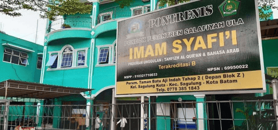

peran masjid dan kajian ilmiah bagi masyarakat batam
oase di tengah kesibukan batam dikenal sebagai kota industri yang dinamis dan penuh kesibukan, di mana rutinitas harian seringkali menyita…
baca selengkapnya
didirikan sejak tahun 2010 di kota batam. yayasan pendidikan & dakwah pondok pesantren imam syafi'i batam: unggul dalam pendidikan, sosial, dan ekonomi umat.
salafiyah ula (su), salafiyah wustho (sw), & mahad it.
unit bm-zis: penyaluran zakat, infak, dan sedekah.
bu-pontrenis: membangun kemandirian ekonomi umat.
pengajian rutin, dauroh ilmiyah, & konsultasi syariah.
subtext
subtext
subtext
subtext
| hari/tanggal | waktu | topik kajian | pemateri | lokasi |
|---|---|---|---|---|
| setiap ahad | ba'da maghrib - selesai | kitab minhajul muslim | ustadz abu fairuz |
"barangsiapa yang menempuh suatu jalan dalam rangka menuntut ilmu, maka allah akan memudahkan baginya jalan menuju surga." (hr. muslim)
oase di tengah kesibukan batam dikenal sebagai kota industri yang dinamis dan penuh kesibukan, di mana rutinitas harian seringkali menyita…
baca selengkapnyamakna perjalanan suci ibadah umroh bukan sekadar perjalanan wisata religi ke tanah suci, melainkan sebuah safar ibadah yang membutuhkan kesiapan…
baca selengkapnyarealita tantangan zaman di era digital yang serba cepat ini, akses terhadap informasi dan pengetahuan menjadi tanpa batas, namun tantangan…
baca selengkapnyaintegrasi instagram @pontrenis.batam
follow instagram